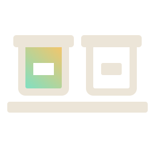
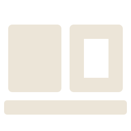

On dark backgrounds: cream outline, lit inside.
On light backgrounds: ink outline, same light inside.

Two identical bins on one shelf. The one that is on is lit inside and its label is empty: it is in use. The one that is off is empty inside and keeps its label: Stockroom still knows what it is and where it is. The two bins are inverses of each other, and the shelf is the catalog that holds them both.
ExtraBold for the wordmark and headlines. Regular for text, the same as the terminal it lives in.

24The small cut drops the lids and labels and thickens the walls.
Files and rules: docs/brand/README.md · built by docs/brand/build.py